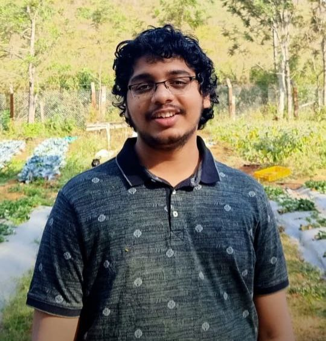

Integrated PhD Student
Theoretical & Computational Chemistry
TIFR Hyderabad, India
My research interests lie at the intersection of theoretical chemistry, computational materials science, topological quantum materials, excited-state physics, and computational catalysis . I am interested in understanding how symmetry, spin-orbit coupling, electronic topology, and many-body interactions govern the properties of materials and catalytic interfaces. My broader goal is to connect first-principles calculations with the fundamental mechanisms underlying experimental observations.
During my master's at TIFR Hyderabad, India, I extensively used Density Functional Theory (DFT) and VASP to investigate electronic properties of periodic solids, including spin-polarised systems, spin-orbit coupling, and valley-dependent phenomena. These experiences motivated my interest in Berry curvature, valley Hall physics, spin-valley locking, and topological electronic states. I aim to explore how magnetic exchange, crystal symmetry, and relativistic effects can be used to engineer electronic properties in low-dimensional materials.
I am also interested in many-body perturbation theory and excited-state methodologies, particularly the GW approximation and the Bethe-Salpeter equation (GW-BSE). These methods provide insights into quasiparticle energies, excitonic effects, and optical spectra beyond conventional DFT. I hope to investigate their applications to quantum materials, light-matter interactions, and interfacial electronic processes.
My experience also includes molecular electronic-structure calculations using Gaussian and ORCA to study organometallic systems and metalloenzyme biomimetics. My interests include high-valent metal-oxo complexes, reaction mechanisms, and explicit solvation effects. In heterogeneous catalysis, I am particularly interested in the hydrogen evolution reaction (HER) at metal-supported interfaces, including Au/hBN/Pt heterostructures. I aim to understand how platinum cluster structures, hydrogen adsorption, charge redistribution, and metastable hydride states influence catalytic activity and reaction pathways.
Another direction I wish to pursue is plasmonics and light-driven catalysis. Plasmon-induced energetic charge carriers can facilitate interfacial charge transfer and chemical transformations. I am interested in understanding these non-equilibrium processes using Density Functional Embedding Theory (DFET), embedded time-dependent DFT, and the embedded Random Phase Approximation (RPA). In particular, I hope to explore how electronic excitations and hot-carrier distributions influence bond activation and local chemical reactivity at metallic interfaces.
Beyond applying established methods, I am keen to understand their numerical foundations, algorithms, approximations, and convergence strategies. I hope to develop deeper expertise in the implementation of advanced electronic-structure methodologies and contribute to computational tools such as VASP and related first-principles packages.
Ultimately, my scientific vision is to bridge topological materials physics, many-body electronic structure, plasmonics, and computational catalysis. I aim to understand not only what calculations predict, but also the physical mechanisms behind those predictions and their reliability against experimental observations. My guiding principle is to bring computational modelling closer to experimental reality while maintaining a deep understanding of the underlying physics and chemistry.